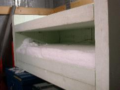

|

|
Experiment of isothermal metamorphism
A 3 months long experiment of isothermal metamorphism at -2 degree C was run at Col de Porte, French Alps, in order to provide precise microtomographic 3-D data for the validation of metamorphism models.
A slab of recent snow of 1 m per 50 cm was first collected in the field, 15 hours after a snowfall. The slab was then stored in an insulating box inside a cold room maintained at -2 degree C till the end of the experiment. A 3 cm wide core was sampled at increasing time intervals, ranging from 24 hours at the beginning to one week at the end of the experiment.
After applying appropriate geometrical analysis tools, the evolutions of porosity, specific surface area, anisotropy and curvature distributions have been obtained, showing a correct description of the well known behavior of an aging snow layer. These measurements provide quantitative data for the validation of metamorphism models and other interesting prospects for improving models and understanding the physical phenomena that happen in snow microstructure.
|